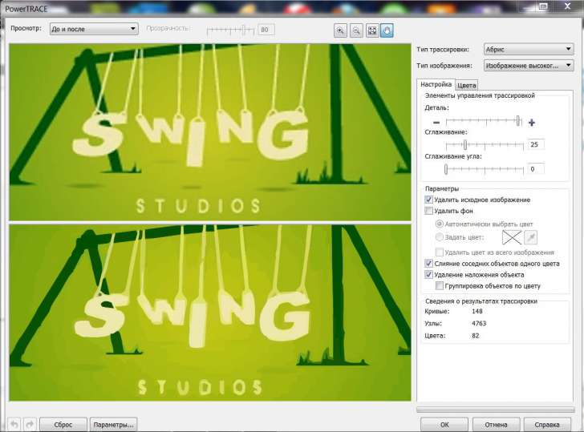

Проблема с трассировкой растрового изображения
Neekeesh / 02.08.2013, 22:50/01:31
Форум:
Имеем маленькое изображение
Нужно его трассировать. Вот что мне обещает инструмент PowerTrace
Вот что он делает после нажатия кнопки ОК
Со странной светлой обводкой я уже сталкивался при трассировании, причем понятия не имею как от нее избавиться. А тут еще и странная пикселизация... WTF???
канаты у качеле-букв на перекладине... после заметил...
Ну давай, иди тогда ищи сайт который хорошо свёрстан :) Будешь ещё умничать, помогу забыть.
Когда мне указывают на мои ошибки, я стараюсь их по возможности исправить, ну или хотя бы признать. У вас же, Санчо, на это странная реакция.
Вот оригинал
Самое странное даже не то, что возникают эти полоски. Я уже привык что чего-то хорошего в этом мире за два клика не добьешься) Самое странное, что:
1) В режиме быстрой трассировки они не появляются, появляются только при использовании power trace
2) в окне предпросмотра power trace отображается слева оригинал, справа то, что должно получиться. Так вот в этом окне то что должно получиться выглядит так, как должно. Но после нажатия на ок появляются полоски
И возникает ощущение что power trace меня жестоко на.... обманул)))
Если бы я считал это ошибкой то исправил бы, а точнее прописал нужную строку при вёрстке. "Позорного то, что сайт плохо сверстан" - это такое указание на ошибку? Ок :D
Ну а что действительно позорно, так это не уметь пользоваться поиском:
Белый видимый контур при трассировке
Отображение стыков
так а по теме проблема решена или нет?
а тут ждут ответов помогло - или еще нужно что-то....
Проблема решена. Просто неприятно, когда редактируют твой старт топик, без твоего ведома, лишая его смысла и возможности получить хоть какой нибудь вразумительный ответ.
Всем кто помог большое спасибо.
В данном случае достаточно добавить под изображение подложку залитую радиальным градиентом тех же цветов, что и на исходнике. А полосы обычно всегда видны – на одних цветах более, на других – менее.
И все-таки загадка дня, неужели power trace не может оттрассировать изображение также как на превью?)

Что же такое неведомое происходит? Вопрос, наверное, к разработчикам)
Совсем не уважаемый Neekeesh) Вам объяснить почему.. трейс это безграмотное сосуществование ., противоположное творчеству. Задавать такие вопросы Вам должно быть просто стыдно. Граненый стакан с водовкой и то может больше Вас. Он иногда наталкивает на мысль что можно сделать , а у Вас одни вопросы причем еще Вы готовы предъявить притензии создателям программы. "! Ой меня Обманули!" Да никто вам не обманывал, вы обманываете самого себя, и стараетесь обвинить Людей которые в отличии от Вас занимаются не простым делом . , я а месте Санчо, Вас с первого поста поставил на место.. И вообще лично для Вас посмотрите видеоматериал на данном ресурсе Внешняя ссылка
Страницы